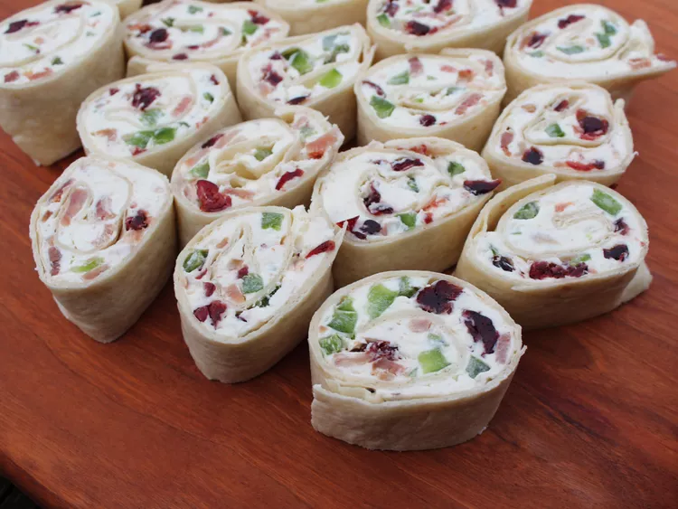

Cranberry Feta Pinwheels

Description
These cranberry feta pinwheels are perfect for holiday parties. With a cream cheese and feta filling, flecked with red and green, they’re an easy, make-ahead appetizer with only a few ingredients.
Ingredients
- 4 slices bacon
- 8 ounces whipped cream cheese, softened
- 1/2 cup crumbled feta
- 1/2 cup chopped green peppers
- 1/2 cup chopped dried cranberries
Steps
- Place bacon in a large skillet and cook over medium-high heat, turning occasionally, until evenly browned, about 10 minutes. Drain bacon slices on paper towels, until cool; chop into small pieces.
- Mix together cream cheese, feta, bacon, green peppers, cranberries, garlic powder, and onion powder in a medium bowl until combined.
- Spread evenly onto each tortilla. Roll up tortillas, then wrap each one tightly in aluminum foil. Chill in the refrigerator, at least 4 hours or overnight.
- To serve, remove foil; trim ends of tortilla rolls, and slice into 1-inch-thick pieces.